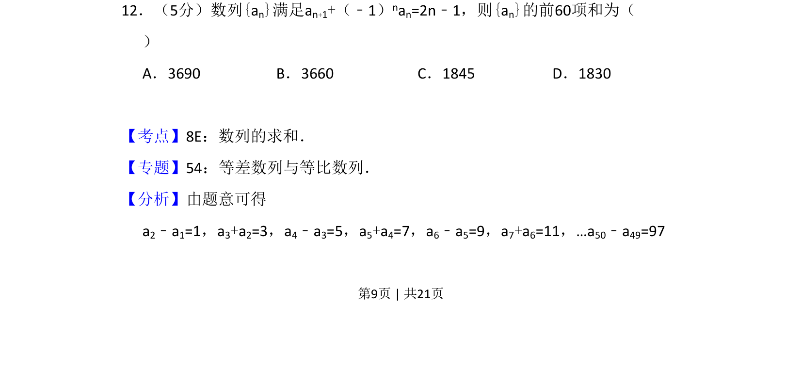
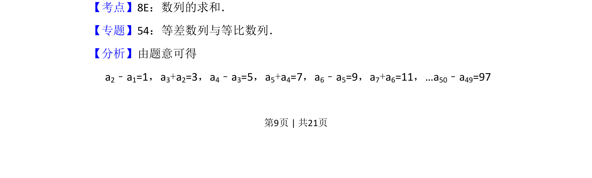
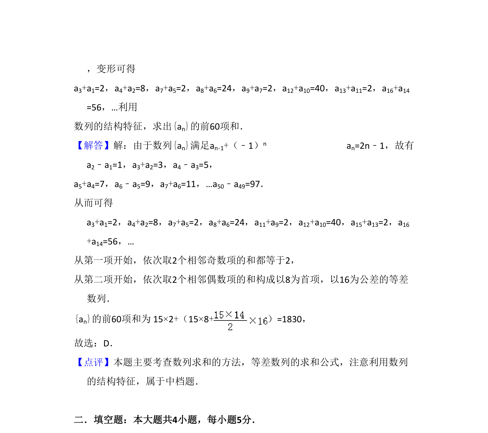

考点：数列求和 等差数列 递推关系 分组求和

求解由递推关系给出的数列前60项和，利用奇偶项分组转化为等差数列求和。


📄 原 PDF 第 9 页：
素材/真题/吉林/2008-2024·（吉林）数学高考真题/2012年高考数学试卷（文）（新课标）（解析卷）.pdf
12．（5分）数列{an}满足an+1+（﹣1）nan=2n﹣1，则{an}的前60项和为（ ） A．3690 B．3660 C．1845 D．1830
【考点】8E：数列的求和．菁优网版权所有 【专题】54：等差数列与等比数列． 【分析】由题意可得 a2﹣a1=1，a3+a2=3，a4﹣a3=5，a5+a4=7，a6﹣a5=9，a7+a6=11，…a50﹣a49=97